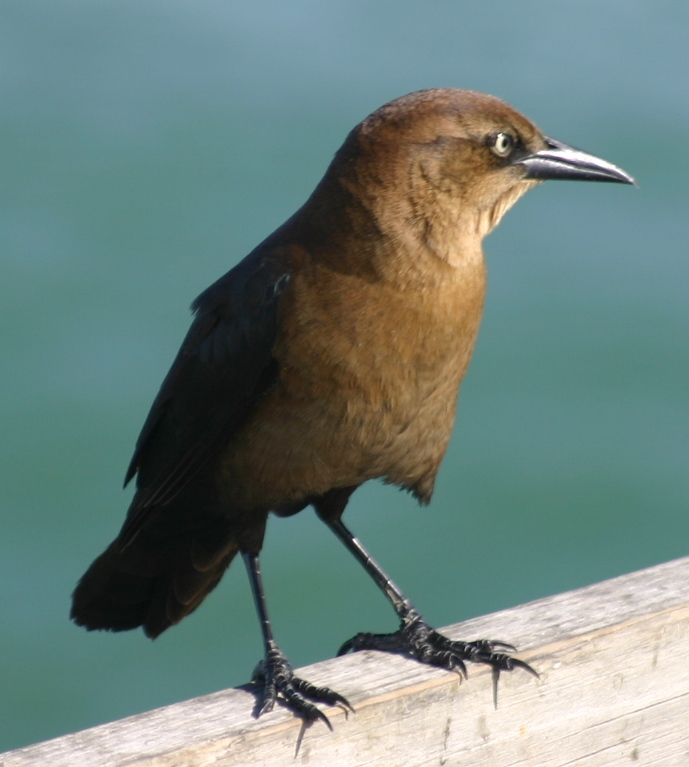

Friday, March the 16th, 2012
back to: title, date or indexes
I always thought that ‘FBI’ referred to the US Federal Bureau of Investigation, but today I learned that the letters actually stand for the Farmland Bird Index.
Now I will be able to make sense of even the most convoluted plot in an American crime drama. All those agents are in fact engaged in the counting and classification of birds. The veil has been lifted from mine eyes!
FBI Agent

Bird